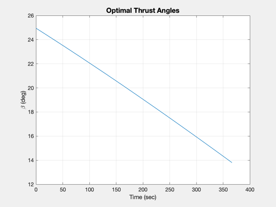
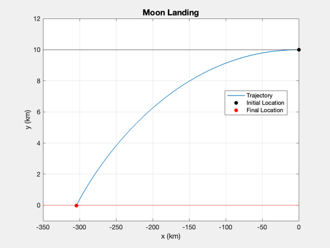
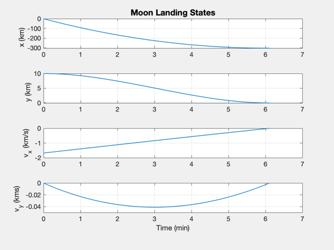

Contents
2D landing simulation using bilinear tangent thrust programming.
Demonstrates the use of the bilinear tangent law on several moons. This demo does not account for the moon's curvature. It also assumes that the gravity is constant.
Things to explore:
1. Try the 3 moons: Earth's moon, Enceladus, or Europa 2. Add another moon 3. Try different thrust accelerations, a
%-------------------------------------------------------------------------- % See also: BilinearTangentLaw, Constant, RK4, RHSPlanetTakeoff, Plot2D %-------------------------------------------------------------------------- %-------------------------------------------------------------------------- % Copyright (c) 2013-2014 Princeton Satellite Systems, Inc. % All rights reserved. %-------------------------------------------------------------------------- % Since version 2014.1 %--------------------------------------------------------------------------
Select the planet or moon
%--------------------------- body = 'Moon'; % 'Enceladus'; % 'Europa'; % Planet/moon parameters %----------------------- switch body case 'Enceladus' rEnceladus = 252.1; % km muEnceladus = 1.08022e20*Constant('newtonian constant of gravitation')/1e9; h = 2; r = rEnceladus + h; u = sqrt(muEnceladus/r); g = muEnceladus/rEnceladus^2; % km/s^2 n = 1000; case 'Europa' rEuropa = 1560.8; % km muEuropa = Constant('mu europa'); h = 200; % Altitude of initial orbit u = sqrt(muEuropa/rEuropa); g = muEuropa/rEuropa^2; % km/s^2 n = 1000; case 'Moon' muMoon = Constant('mu moon'); rMoon = Constant('equatorial radius moon'); u = sqrt(muMoon/rMoon); g = muMoon/rMoon^2; h = 10; n = 2000; end
Control thrust
%--------------- a = 3*g; % Find the thrust direction angles %--------------------------------- [beta, t] = BilinearTangentLaw( u, g, a, h, n ); BilinearTangentLaw( u, g, a, h, n ); % Do this to get a landing %------------------------- beta = fliplr(beta); dT = t(2) - t(1); % Size the plotting array %------------------------ xP = zeros(4,n); % Initial state %-------------- x = [0;h;-u;0]; % Simulate %--------- for k = 1:n xP(:,k) = x; x = RK4(@RHSPlanetTakeoff,x,dT,0,a,g,beta(k)); end
Plot
%------ [t, tL] = TimeLabl(t); % Titles for plots %----------------- s1 = sprintf('%s Landing',body); s2 = sprintf('%s Landing States',body); s3 = sprintf('%s Surface',body); Plot2D(xP(1,:),xP(2,:),'x (km)','y (km)',s1); % Annotate the plot %------------------ hold on plot(xP(1,1),xP(2,1),'ko','MarkerFaceColor','k') plot(xP(1,end),xP(2,end),'ro','MarkerFaceColor','r') xLim = get(gca,'xlim'); set(gca,'yLim',[-ceil(0.01*h) ceil(1.2*h)]) line(xLim,[h;h],'color','black') text(xLim(2)-200000,1.04*h,'Initial Altitude') line(xLim,[0,0],'color','red') text(xLim(1)+10000,-0.04*h,s3) legend('Trajectory','Initial Location','Final Location','Location','Best') Plot2D(t,xP,tL,{'x (km)','y (km)','v_x (km/s)', 'v_y (kms)'},s2); %-------------------------------------- % $Id: cf4cc5d06af866c9b04c4f33320f02c533679e2a $ 